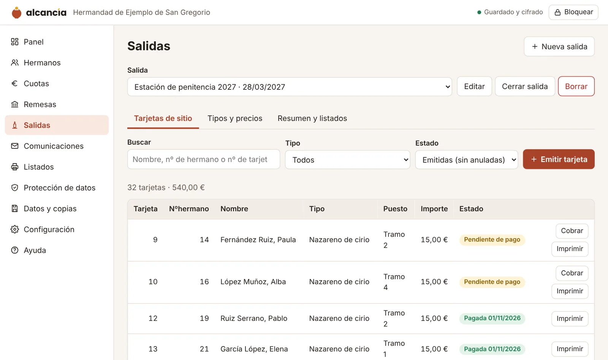

Alcancía para hermandades y cofradías
Censo, cuotas, tarjetas de sitio y cabildos, sin que los datos salgan de la casa de hermandad
Para secretarías y mayordomías de cofradías pequeñas y medianas que llevan el censo y el reparto de tarjetas en hojas de cálculo o libros heredados.
- Gratis
- Sin registro ni cuentas
- Datos cifrados en vuestro ordenador
- Funciona sin conexión

Pensado para vosotros
Salidas y tarjetas de sitio
Define cada salida (estación de penitencia, gloria, extraordinaria) y sus tipos de tarjeta: cirio, cruz, insignia, vara, costalero, mantilla… cada uno con su precio, independiente de la cuota.
Reparto ágil
Emite y cobra la tarjeta en el momento, con aviso si el hermano tiene cuotas pendientes o se acaban las plazas de una insignia. Imprime las tarjetas, seis por hoja.
Listados por tipo
Listado de las tarjetas pagadas de cada tipo para una salida, de las pendientes o de los hermanos que aún no la han sacado. En papel, PDF o CSV.
Historial de cada hermano
Todas las tarjetas de sitio que ha tenido, año a año, en su ficha.
Túnicas y enseres
Inventario con código y talla, alta de muchas túnicas a la vez, préstamo con fianza y recibo para firmar, y aviso de las que no han vuelto.
Certificados y modelo 182
Como entidad de la Iglesia, la hermandad puede certificar las cuotas y donativos para la renta de sus hermanos y presentar el modelo 182 con un fichero generado aquí.
Cortejo por tramos
Tramos con su insignia y su diputado, hermanos colocados por antigüedad y por parejas, cambios a mano y hojas para que cada diputado pase lista.
Lotería y comida de hermandad
Talonarios de lotería por responsable con su liquidación, e inscripciones con pago para comidas, convivencias o viajes.
Cofrade activo y asociado
Si vuestra diócesis lo exige (como la Archidiócesis de Granada), distingue activos y asociados, guarda el historial de cada cambio y prepara el censo de votantes del cabildo.
Número por antigüedad y cuotas
Renumera el censo por fecha de alta, genera las cuotas y la remesa SEPA para el banco.
Datos especialmente protegidos
Pertenecer a una hermandad revela convicciones religiosas: los datos no salen de la casa de hermandad.
Preguntas frecuentes
¿De verdad es gratis?
Sí. La versión que funciona en vuestro ordenador es gratuita para entidades sin ánimo de lucro. Si en el futuro hay una versión en la nube para varias personas de la junta, será opcional.
¿Dónde se guardan los datos?
En el navegador del ordenador donde trabajáis, cifrados con vuestra contraseña. Además podéis descargar copias cifradas o activar el guardado automático en un fichero dentro de la nube de la entidad.
¿Qué pasa si se estropea el ordenador?
Abrís la última copia en otro ordenador con la misma contraseña. Por eso el programa os recuerda hacer copia cada semana.
¿Y si olvidamos la contraseña?
Al crear la entidad, el programa genera una llave de recuperación para imprimir y guardar en un sobre cerrado. Con ella se abren los datos y se pone una contraseña nueva. Sin contraseña ni llave nadie puede leer los datos, tampoco quien desarrolla el programa: guardad la llave lejos del ordenador.
¿Sirve para varios miembros de la junta a la vez?
Cada persona trabaja con su copia; para compartir, se entrega la copia cifrada. Si preferís sincronizar, activad el guardado automático en una carpeta compartida y trabajad por turnos.
¿Funciona con mi banco?
El fichero de remesas sigue el estándar europeo de adeudos directos SEPA (pain.008.001.02) que aceptan los bancos españoles. La primera vez, comprobad con vuestra oficina que tenéis contratado el servicio de adeudos y probad con pocos recibos.
¿Cumple el RGPD?
Alcancía os ayuda a cumplirlo: cifra los datos, no los cede a nadie, genera la cláusula informativa y el registro de actividades y permite atender los derechos de acceso y supresión. La responsable del tratamiento es siempre la entidad; en Descargas tenéis un kit de plantillas.
¿Qué navegador necesito?
Chrome o Edge actualizados, en Windows, macOS o Linux. Firefox y Safari funcionan, pero no permiten el guardado automático en un fichero.